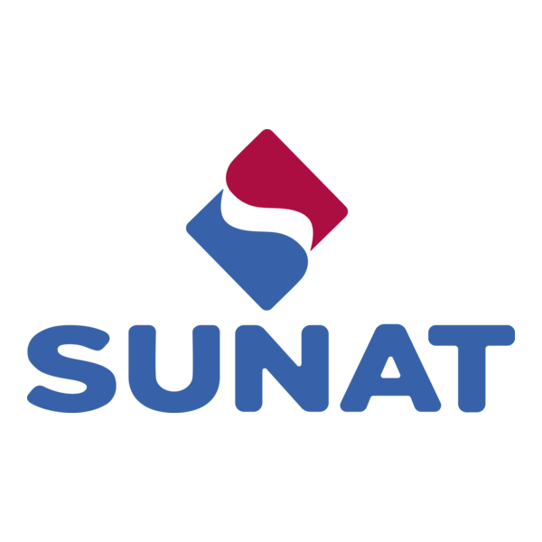

SIGI – Sistema de Gestión de Información Tributaria – SUNAT
Contexto
SUNAT necesitaba modernizar el sistema SIGI, encargado de la gestión y procesamiento de información tributaria proveniente de múltiples sistemas internos y externos. El objetivo era mejorar la velocidad de procesamiento, la calidad de datos y la trazabilidad de los movimientos asociados a contribuyentes, declaraciones y obligaciones fiscales.
El sistema anterior presentaba procesos monolíticos, integración limitada y dificultades para escalar ante altos volúmenes de información, especialmente en periodos críticos como vencimientos masivos de declaraciones.
Solución Implementada
Se desarrolló un conjunto de servicios REST y microservicios orientados al manejo de información tributaria, integrados con sistemas internos de validación, auditoría y mensajería.
- Implementación de servicios para registro, actualización y consulta de información tributaria.
- Integración con plataformas internas mediante conectores JAX-RS y SOAP.
- Optimización de consultas y persistencia con MongoDB.
- Uso de Kafka para eventos tributarios y procesamiento asincrónico.
- Implementación de validaciones complejas según normativa vigente.
- Automatización del despliegue con Gradle + pipelines internos.
Estas mejoras permitieron que la plataforma gestione grandes volúmenes de datos con mayor estabilidad y trazabilidad, cumpliendo lineamientos técnicos y operativos exigidos por SUNAT.
Tecnologías Utilizadas
- Java 11 · JAX-RS · Jersey
- Gradle · Pipelines internos
- MongoDB · SQL Server
- Kafka – eventos tributarios
- SOAP / REST para integraciones internas
- Arquitectura orientada a servicios (SOA)
Resultados Clave
- Reducción del tiempo de procesamiento de operaciones tributarias en hasta 40%.
- Mayor precisión y calidad en la validación de datos.
- Incremento significativo en la capacidad de procesamiento en picos de carga.
- Mejor trazabilidad y auditoría mediante eventos Kafka.
- Facilidad para incorporar nuevas reglas tributarias sin afectar la estabilidad del sistema.